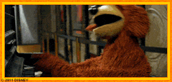
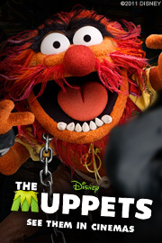
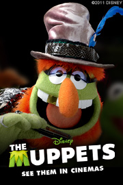
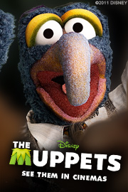
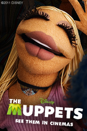
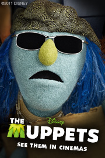
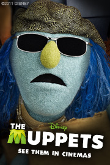
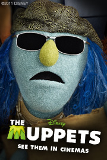

Loading navbar...
Muppet Extras
Muppet Desktop Icons
DOWNLOAD
20 .ico (Windows Icon) files zipped (79.2 KB)
20 files in a .sit file (Mac OS) (75.3 KB)
Muppet Email Signatures

Muppet Emoticons
DOWNLOAD
6 .gif files zipped (115 KB)
Muppet Profile Pictures (Facebook)


DOWNLOAD
13 .jpg files zipped (370 KB)

 20 .ico (Windows Icon) files zipped (79.2 KB)20 files in a .sit file (Mac OS) (75.3 KB)
6 .gif files zipped (115 KB)
20 .ico (Windows Icon) files zipped (79.2 KB)20 files in a .sit file (Mac OS) (75.3 KB)
6 .gif files zipped (115 KB)
 
13 .jpg files zipped (370 KB)

13 .jpg files zipped (370 KB)